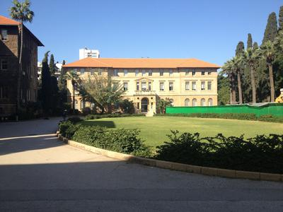
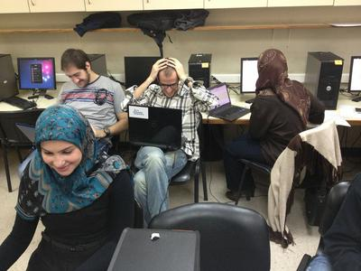
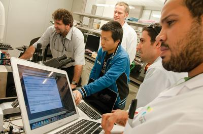
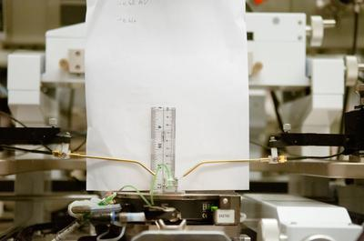

Bootcamp Recap: Middle East and South Africa
Although running a Software Carpentry Bootcamp is a rewarding experience on its own, sometimes we get the opportunity to get to travel somewhere really interesting as volunteer educators. This March, I put on bootcamps at the American University of Beirut in Lebanon, King Abdullah University of Science and Technology in Saudi Arabia, and Stellenbosch University in South Africa. For all three boot camps, I taught as primary instructor, with a total of approximately 12 hours of instruction spread out over 2 days. I adapted content from Software Carpentry as well as previous classes and lectures I've taught in scientific computing, reproducibility, and software development.
|  |  |
The first two workshops were taught in teaching laboratories, but more than half the students brought their own Linux and OS X laptops. I was surprised by the operating system mix at Stellenbosch University: almost all of the students brought Windows laptops! Fortunately, we had an almost seamless experience using Continuum's Anaconda package to provide out-of-the-box Python with NumPy, SciPy, matplotlib, and (of course), IPython. Another tool that was invaluable for me in teaching the boot camps was Etherpad. We created a different one for each of the boot camps, and it was especially useful when students didn't have a clear view of the screen or ended up slightly behind the others.
|  |  |
My advice for anybody running a boot camp abroad is:
- plan ahead, especially by installing software in teaching laboratories
- recruit local helpers
- stay flexible!
Bonus! Software Carpentry in the Laboratory
Ulrich Buttner and the New Microfluidics Thrust Area Lab brought a fun problem to work on at second boot camp, taking live camera data and using image processing to translate pictures into extremely sensitive pressure measurements. Pictures and code from solving the problem are available here.
Acknowledgements
I owe a big thanks to the hosts and volunteers for each workshop:
- American University of Beirut: George Turkiyyah (host) and Mike Hamam (IT support).
- King Abdullah University of Science and Technology: David Ketcheson (host), Lisandro Dalcin (guest instructor), Enas Yunis (volunteer), and Damian San Roman Alergi (photos).
- Stellenbosch University: Stéfan van der Walt (host and guest instructor).
Originally posted 2013-04-24 by Aron Ahmadia in American University of Beirut, King Abdullah University of Science and Technology, Stellenbosch University.
comments powered by Disqus